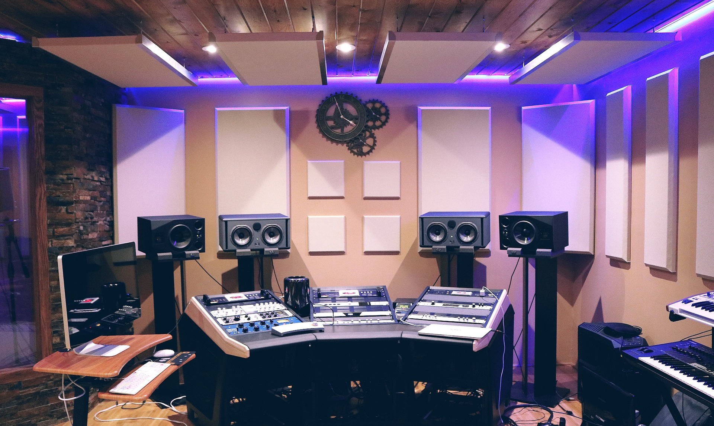
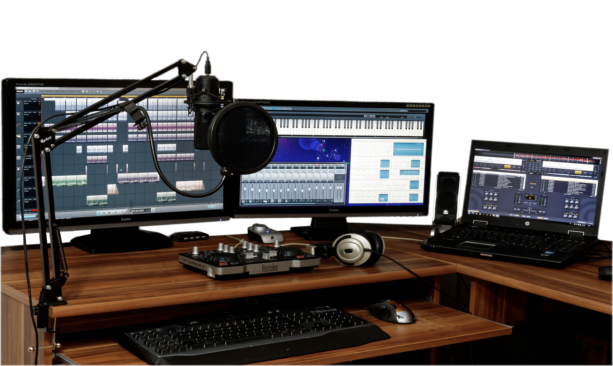
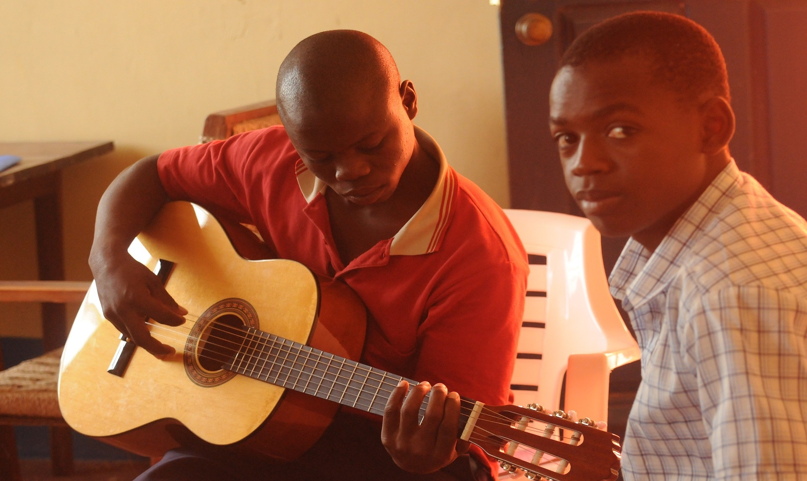
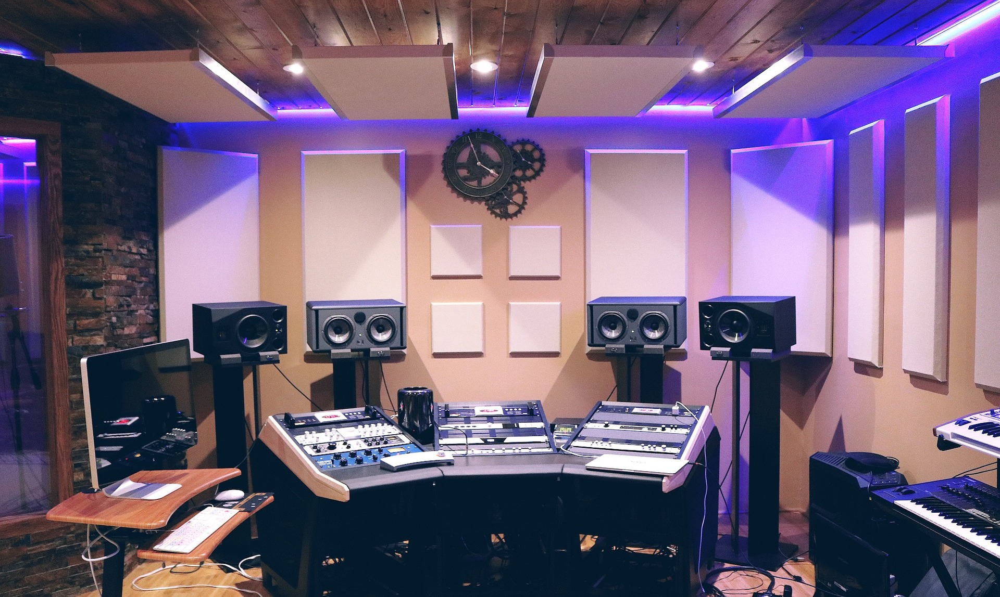
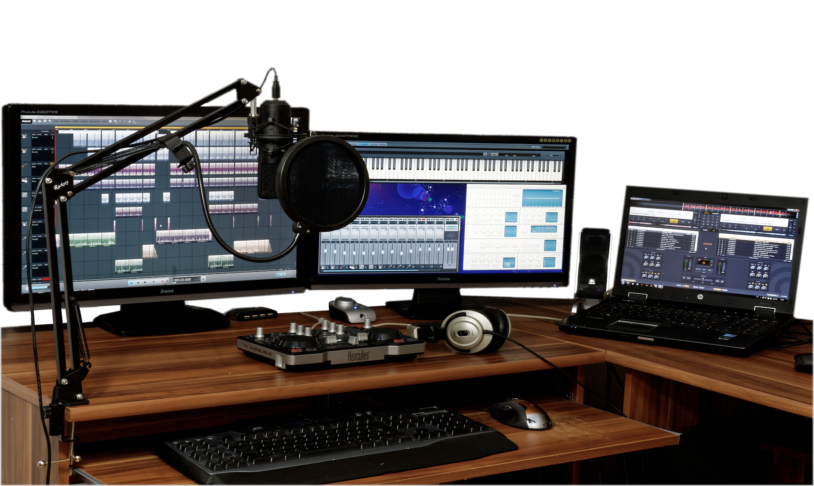
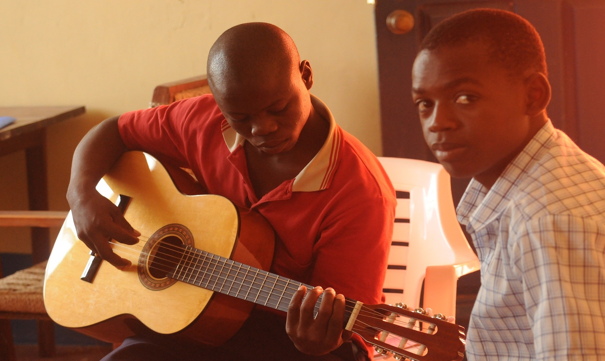
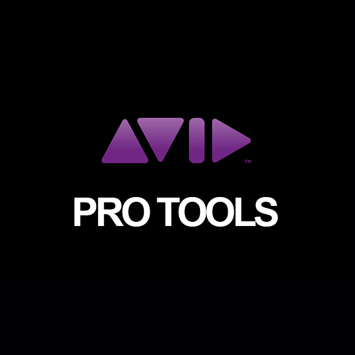
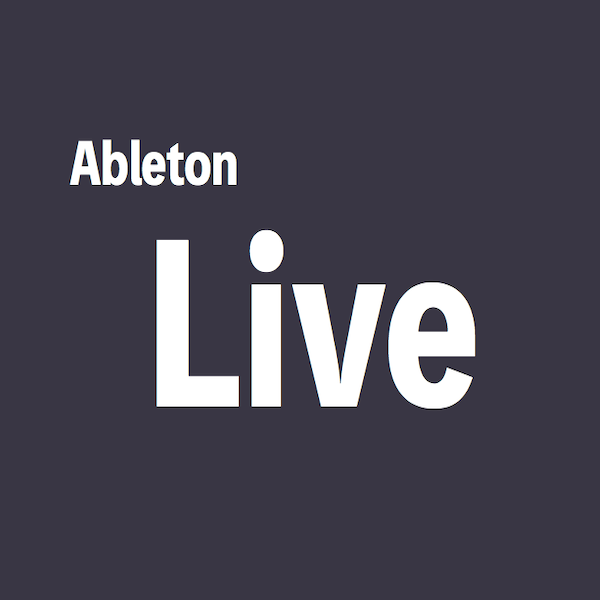
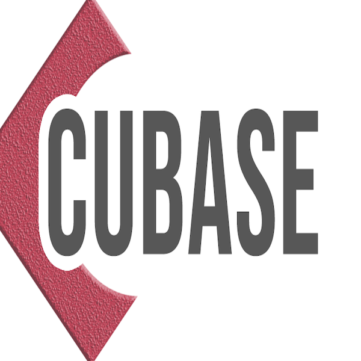
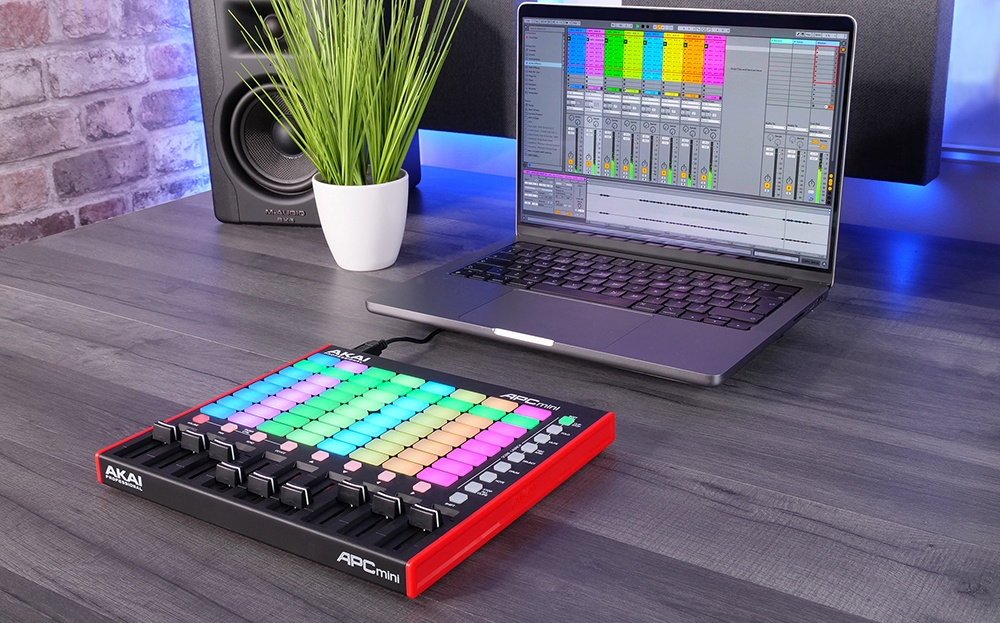

DTMSchool
 





デスクトップミュージックはパソコンを利用して
楽曲制作をおこなう音楽制作手法の総称です。
当スクールでは初心者から中級・上級者が学べる環境を整えています初心者からプロを目指すことも可能です。
当店で1万円以上の楽器を購入された方は
2コマ分の体験入学を無料で行うことができます
橋村楽器の特徴
- 3種類のDAWを選べます
- プロのミュージシャンからの直接指導
- 土曜・日曜学生半額！
選べるDAW
業界で人気の3種類
- 
- 
- 
初心者の方おすすめポイント
パソコンが苦手な方でも安心！DAWのインストール方法から曲の完成までを学び、データの保存や、友人とのデータ送受信などにも役立付つ基本コース！
中級〜上級者の方おすすめポイント
有名曲アレンジなどの課題をこなしながら受講していきます。ミキシング、マスタリング技術も学んでいき、コンペなどに参加してプロを目指すこともできます！
4つのコースから受講できます
eラーニングによるリモート受講もございます
| 初級〜中級者 | |
|---|---|
| ビギナー | 音楽未経験、PCが苦手な方におすすめの初級コース |
| ミドル | 楽器は弾けるようになったがDAWがわからない方におすすめ |
| 中級〜上級者 | |
| ハイクラス | 複雑な曲の構成やアレンジ力をつけたい方、ミキシングやマスタリング技術を学びたい方にもおすすめ！ |
| プロフェッショナル | プロの音楽家を目指す方におすすめ。初心者からでもOK！ |